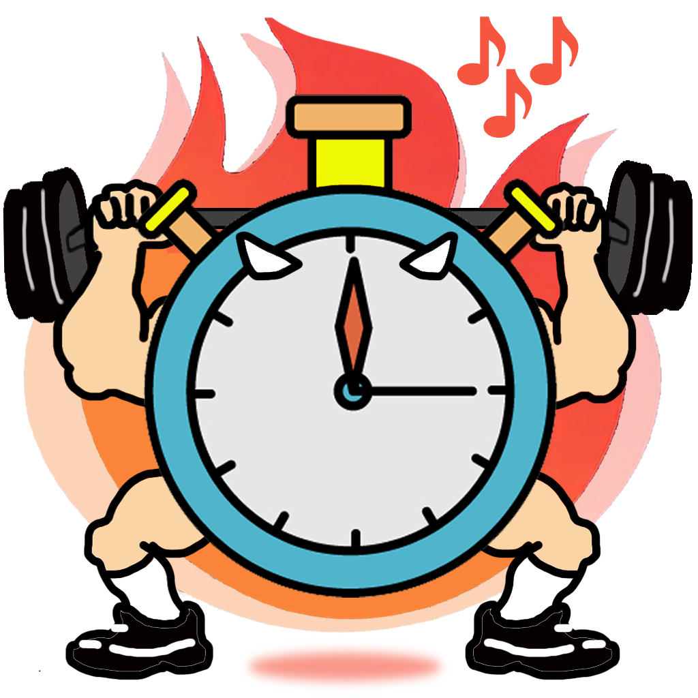
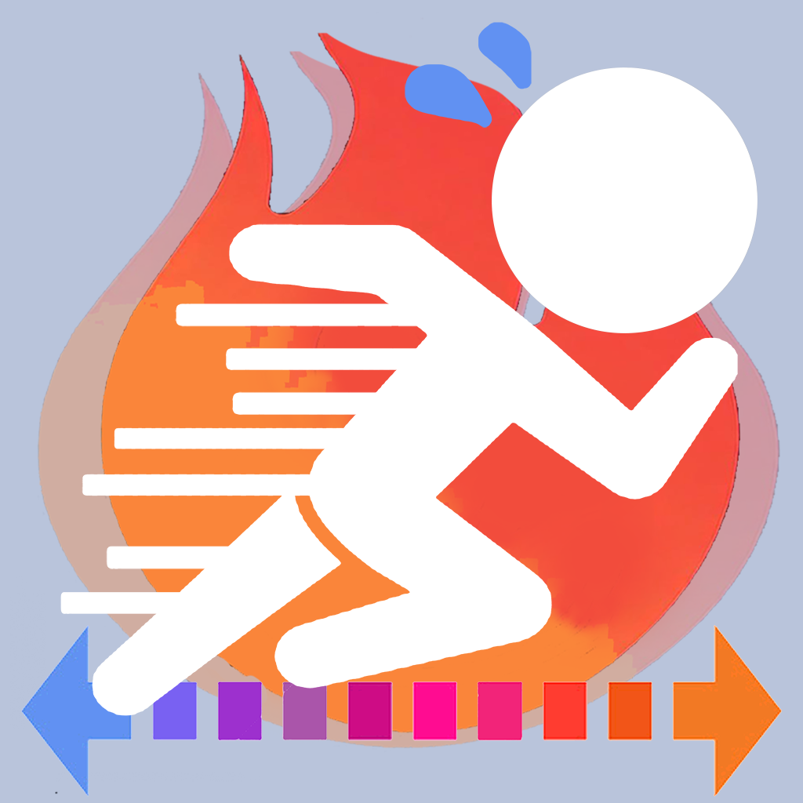
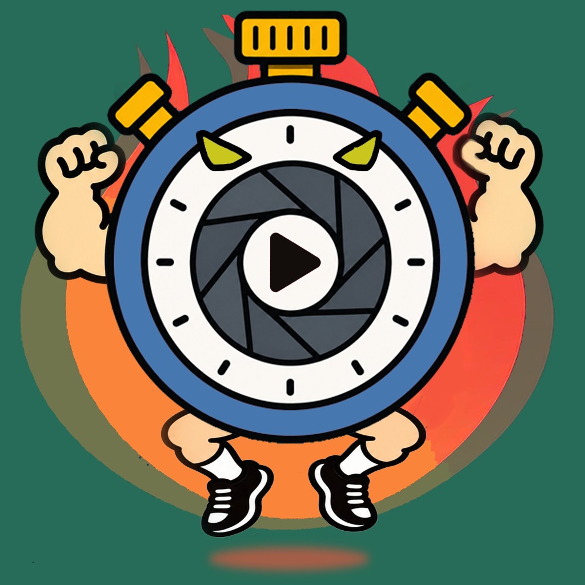

音楽が流せる筋トレタイマー
運動と休憩の時間を設定。音楽を流しながらインターバルを管理します。
kpworks / アプリ開発
筋トレの時間を計る。ジャンプを測る。英文を読む。
それぞれの用途に合わせたアプリを作っています。
kpworksのアプリ

運動と休憩の時間を設定。音楽を流しながらインターバルを管理します。

20mシャトルランの音声再生と測定結果の記録に。

動画からタイムや垂直跳びを測定。2つの動画の比較や骨格表示による動作解析も可能です。
筋トレの記録とメニュー共有のためのアプリ。現在準備中です。
英文を意味のまとまりで区切って読むためのアプリ。現在準備中です。
アプリのスクリーンショットや紹介画像を、ブラウザ上でデザインできる制作ツールです。
ブラウザで使う
インストールせずに使えます。
筋トレガイド
kpworksが開発するアプリと、筋トレのメニュー・記録・計測に役立つ情報をまとめています。英語の練習には、ブラウザで動くSlashTyperもどうぞ。